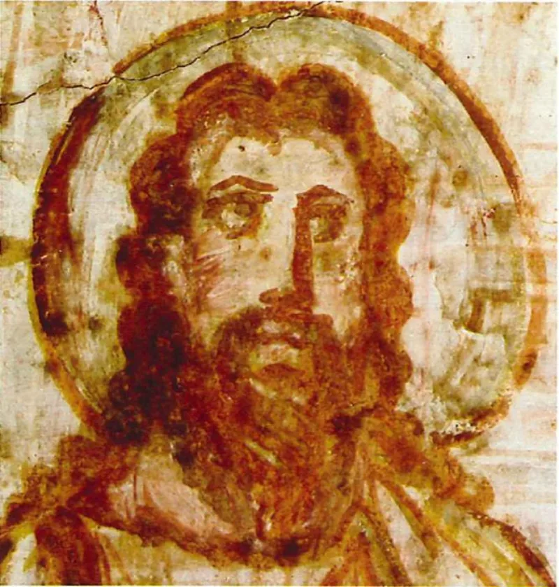
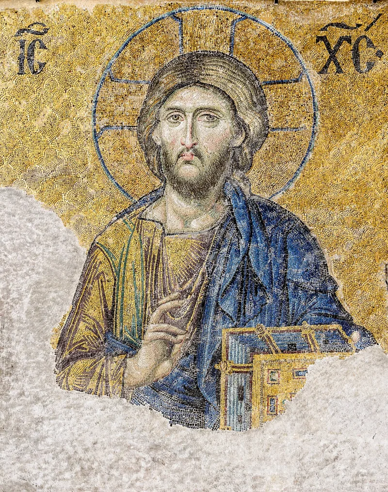

The text settles it — but concede the grievance first, or nothing will be heard.
At some point the conversation will turn to what Jesus looked like. Do not build anything there, and do not let it become the argument.
Defend a light-skinned Jesus and you become the exact picture the movement preaches about. Dispute a dark-skinned Jesus and you are arguing against something probably true.
He was a first-century Judean.
Concede it at once, and fully. The European paintings are wrong.
Then move to the question that decides anything. Not what he looked like.
Who he is.
"You're right about the paintings, and I'm not going to defend them. Can I ask you something else?"


There is nothing to answer here: the European paintings really are wrong.
Not applicable. This entry marks an argument to avoid, not a claim to answer. The European paintings really are wrong, and a Christian should say so first, and gladly.
Do not use this one. Concede the paintings at once, then move on.
Avoid it, because the argument cannot be won in the only sense that matters. Defend a light-skinned Jesus and you become the picture the movement preaches about. Dispute a dark-skinned Jesus and you are defending a claim with no evidence and nothing at stake.
Meanwhile the concession is free, and it disarms. Agreeing warmly that Western art lied costs nothing, and it buys a hearing. Be generous about the person as well as blunt about the error. Someone raised on those paintings has good reason to distrust them.
The real case is elsewhere. It is in what the New Testament says makes someone Abraham's offspring. Handle Revelation 1 in its own case, where the Daniel 7 and 10 background can be laid out calmly. Never let it become the headline.